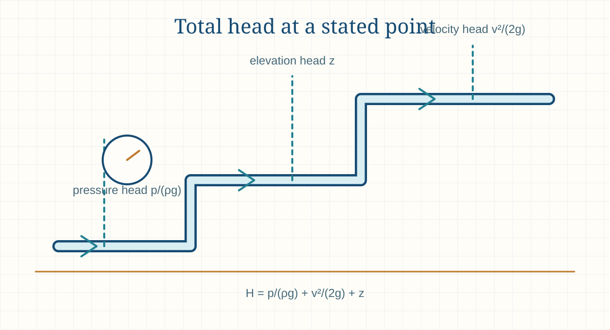

Engineering principle
Pressure Head, Velocity Head and Total Head
Pressure head, velocity head and elevation head express different forms of fluid energy on a common head basis. Their combination is used to interpret hydraulic and duct-system energy balances.

- Content type
- Engineering principle
- Level
- Engineering › Fluid Mechanics, Piping, Pumps, Fans and Ducts › Fluid Flow Principles › Pressure and Head › Pressure Head, Velocity Head and Total Head
- Audience
- Student · Design engineer · Project engineer · Plant engineer
- Last reviewed
- 30 August 2026
What Is Pressure Head, Velocity Head and Total Head?
Pressure head, velocity head and elevation head are convenient ways to express fluid energy per unit weight as a length. They allow pressure, velocity and position to be compared on the same basis, normally metres of the flowing liquid.
Pressure head is pressure divided by specific weight; velocity head is velocity squared divided by twice gravity; elevation head is the height relative to a chosen datum. Their combination is commonly called total head, subject to the selected energy equation and the inclusion of losses, pump head or turbine head.
The terms are useful for pumps, piping, tanks, nozzles and measurement systems, but they are not interchangeable. Correct application needs a defined fluid density, a stated datum, a consistent pressure reference and a clear system boundary.
Why Is Pressure Head, Velocity Head and Total Head Important in Engineering?
Head form turns a mixed-unit piping problem into an energy balance that can be checked along a flow path. It is the normal bridge between a pump curve, system curve, static elevation difference and friction losses.
A result can become misleading if absolute and gauge pressure are mixed, if velocities are taken from different pipe areas without noting the change, or if head losses are omitted. In a real system, the pump duty is the energy added that overcomes the elevation difference, pressure requirement and all relevant losses.
Key Terms and Definitions
- Pressure head
- p/(ρg), expressed as a length of fluid column.
- Velocity head
- v²/(2g), a kinetic-energy term expressed as a length.
- Elevation head
- z, the vertical position relative to a defined datum.
- Total head
- Sum of pressure, velocity and elevation head at a stated point.
- Head loss
- Energy per unit weight dissipated through friction, fittings, valves and equipment.
- Pump head
- Energy per unit weight added by a pump across its stated suction and discharge points.
- Hydraulic grade line
- Pressure head plus elevation head plotted along a system.
- Energy grade line
- Hydraulic grade line plus velocity head.
Fundamental Principle
For steady incompressible flow between two chosen points, an extended Bernoulli equation relates pressure, velocity and elevation terms while accounting for head added, head removed and head loss. The result is an engineering energy balance, not simply a list of pressure readings.
The chosen datum can be arbitrary, provided it is used consistently. Changing the datum shifts elevation terms together without changing the physical result. In contrast, changing fluid density, pipe area or pressure reference can change individual terms and must be treated deliberately.
Engineering interpretation and design basis
The head form of the energy equation is useful because it expresses pressure, elevation and velocity on one length basis. It enables an engineer to follow how energy changes between two points in a system and to separate useful pressure rise from static lift, velocity changes and irreversible losses. The result is only meaningful when both points, the fluid density and the flow condition are clearly defined.
Total head is not simply the reading of one gauge. It is a calculated energy quantity that may include pressure head, elevation head and velocity head, with losses and pump or turbine head considered between stations. In real systems, readings can also be affected by tapping location, pulsation, two-phase flow, local disturbances and mismatched elevation datums.
Formulae, Symbols and Units
Pressure head
hp = p / (ρg)
Use pressure p in Pa, density ρ in kg/m³ and gravity g in m/s² to obtain metres of fluid.
Velocity head
hv = v² / (2g)
Use velocity v in m/s. This term increases rapidly because velocity is squared.
Total head at a point
H = p/(ρg) + v²/(2g) + z
Use a common pressure basis and datum for all terms.
Extended energy balance
H1 + Hpump = H2 + hL
For a simplified steady incompressible system, hL represents applicable losses between the chosen points.
Interpretation before use
Head terms are most useful when they are all referred to the same system boundary. A pressure reading at one flange and a velocity calculated at another pipe size cannot be combined without confirming exactly where each term applies.
Use a more complete method when density varies materially, gas compressibility, cavitation, transients, two-phase flow, flashing, non-Newtonian behaviour or safety-critical pressure behaviour is part of the duty.
Using the result in engineering work
When a pressure is converted to metres of head, the conversion uses the density of the fluid being considered. The same pressure difference corresponds to a different head for a liquid with a different density. For this reason, always name the liquid and temperature when moving between kPa, bar and metres of liquid head.
Velocity head is often small in large, slow process lines but can become material in nozzles, small pipes, high-velocity ducts and transitions. A pressure measurement at one local high-velocity point should not be mistaken for the static pressure needed at another station. Use a consistent pressure definition and measurement method.
Assumptions and Validity Range
- The selected equation represents the stated steady-flow system boundary.
- Density is appropriate for the fluid condition and pressure/temperature range.
- Pressure readings have a declared gauge or absolute reference.
- Velocities correspond to the actual cross-sectional area at each point.
- Losses, pump head and turbine head are included where applicable.
- Compressibility, multiphase flow and transient effects are assessed separately when material.
Factors Affecting the Result
Fluid density
The same pressure represents a different pressure head for fluids of different density.
Pipe area
A reduction in area increases velocity and can materially increase velocity head and losses.
Elevation datum
Only elevation differences matter, but the selected datum should be documented.
Pressure reference
Gauge and absolute terms cannot be mixed without conversion.
Friction and fittings
Straight pipe, valves, bends, filters and equipment dissipate energy.
Flow variation
Changes in flow alter velocity head and many system losses approximately with the square of flow.

Step-by-Step Engineering Method
- Define the two calculation points. Mark their locations, pipe areas, elevations and required pressure conditions.
- Select a datum and pressure basis. State gauge or absolute pressure and keep the choice consistent.
- Obtain density at the operating condition. Do not use a generic value for a materially different fluid or temperature.
- Calculate velocity at each point. Use Q/A and the actual internal flow area.
- Convert all terms to head. Calculate pressure, velocity and elevation head separately.
- Add equipment and loss terms. Include pump head, turbine head and applicable pipe/component losses.
- Check the result. Confirm signs, directions and whether a result is physically consistent with the process.
What to record with the result
Record the exact reference points, datum, pressure reference, flow direction, density source, pipe IDs, elevations, flow rates, losses and equipment terms. A head balance cannot be independently reviewed if a reader cannot identify where each value applies.
Check normal, minimum and maximum flow cases separately. A high-flow case may be governed by velocity and friction, while a low-flow or shutoff case can be governed by static elevation, required pressure or pump operating limits.
Design-review checklist
- Define stations 1 and 2. Mark the exact pressure taps or physical boundaries, including elevations and pipe diameters.
- Confirm the fluid basis. Use density at the actual temperature and composition, especially for hot, compressible or multiphase services.
- Identify the pressure type. Distinguish static, stagnation, gauge and absolute pressure and do not interchange them without conversion.
- Calculate velocities. Use the actual internal flow area and actual volume flow at each station.
- Set a common elevation datum. Record elevations from one reference plane and use a clear sign convention.
- Include energy addition and removal. Add pump head or subtract turbine head where these occur between stations.
- Include losses. Account for friction, fittings, equipment, control valves and other irreversible energy losses.
- Check measurement quality. Consider instrument range, calibration, tapping location, flow disturbance and transient behaviour before acting on a head balance.
Illustrative Engineering Example
Hypothetical preliminary example — not a design calculation
Water at approximately 1,000 kg/m³ has a gauge pressure of 200 kPa, velocity of 3 m/s and elevation of 6 m above a stated datum. The pressure head is 200,000/(1,000 × 9.80665) = 20.4 m. The velocity head is 3²/(2 × 9.80665) = 0.46 m.
At that point, the total gauge-based head is 20.4 + 0.46 + 6 = about 26.9 m. This is a point value only. A pump-duty calculation would still need the second point, all piping losses and the applicable pump or turbine term.
Industrial Applications
Pump duty
Compare pump head with the system energy requirement.
Piping systems
Relate static elevation, required delivery pressure and friction losses.
Tank systems
Assess liquid levels, pressure at nozzles and transfer paths.
Flow measurement
Interpret pressure-difference devices with the correct velocity and density basis.
Nozzles and restrictions
Screen the pressure-to-velocity conversion and potential losses.
Hydraulic grade studies
Visualise pressure margin along long or complex liquid lines.
Water and wastewater
Evaluate gravity lines, lift stations and treatment-plant piping.
Troubleshooting
Separate static, velocity and friction contributions to unexpected pressure behaviour.
Selection and operating context
Head calculations support pump-duty definition, control-valve sizing, system-curve development, static-lift assessment and troubleshooting. They should be retained as a station-by-station energy record rather than as an isolated final number. That record makes later review possible when a pipe, valve, flow rate, liquid temperature or equipment item changes.
For compressible gas systems, the incompressible head form may be insufficient because density changes materially through the system. Use a compressible-flow method, appropriate pressure conventions and a temperature/composition basis. For two-phase or flashing flow, specialised models and qualified review are needed.
Decision record and final-design handover
A practical energy-balance sheet should identify every calculation station with elevation, pipe size, velocity, pressure type, density basis, energy addition or removal and intervening loss. This makes the result auditable and allows a reviewer to trace a reported pump head or pressure shortfall to its physical source. It is preferable to one final total with no defined station references.
Before finalising an energy balance, reconcile it with measurement capability. Pressure transmitters must have appropriate ranges and locations; elevations need a common datum; flow measurement must represent the intended station; and transient or pulsating systems may require time-averaged or specialised analysis. A steady-state equation cannot make uncertain field data more reliable.
Final design and commissioning checks
- Name every calculation station and establish one elevation datum.
- State whether each pressure is static, stagnation, gauge or absolute.
- Use fluid density appropriate to the station temperature and composition.
- Include all pump, turbine, control-valve and equipment terms between stations.
- Test whether velocity-head or compressibility effects are material to the result.
- Specify pressure-tap, flow-measurement and commissioning checks for verification.
Scope control before final use
An energy balance should always state what it does not include. For example, a simplified steady liquid calculation may omit compressibility, flashing, transient surge, two-phase slip, pump pulsation or control dynamics. Naming these boundaries prevents a preliminary head balance from being used as proof that a more specialised hydraulic review is unnecessary.
Common Mistakes and Limitations
- Adding pressure, velocity and elevation without first converting to a common head basis.
- Mixing gauge and absolute pressure.
- Using one velocity for sections with different internal areas.
- Omitting losses through fittings, filters, valves and equipment.
- Using an arbitrary density without matching the fluid condition.
- Ignoring a pump or turbine head term.
- Reversing the sign of an elevation or pressure difference.
- Treating a steady-state head balance as a water-hammer or transient analysis.
Troubleshooting signals
Pump duty disagreement
Confirm the suction and discharge station elevations, gauge locations, liquid density and whether measured pressure includes a local velocity effect.
Unexpected static pressure
Look for a control-valve position, fouled strainer, elevation change, density change or flow-rate increase that shifts the energy balance.
Conflicting head values
Check that one calculation did not use metres of water while another used metres of the actual pumped liquid.
Noisy or unstable readings
Review pressure-tapping arrangement, pulsation, air pockets, pump operation and transient flow before using the data in a steady-state equation.
Frequently Asked Questions
What is total head?
It is the sum of pressure head, velocity head and elevation head at a stated point, with equipment and loss terms considered in a system balance.
Why is head expressed in metres?
It is energy per unit weight expressed as an equivalent height of the flowing fluid.
Is pressure head the same for every liquid?
No. The pressure-to-head conversion depends on density.
What is the difference between hydraulic and energy grade line?
The energy grade line includes velocity head; the hydraulic grade line does not.
Can gauge pressure be used?
It can be useful for systems referenced to the same atmosphere, but the pressure basis must remain consistent.
Does velocity head matter in a large pipe?
It may be small at low velocity but increases with velocity squared and can be important at nozzles, restrictions and smaller lines.
What is a head loss?
It is energy per unit weight dissipated by friction and components along a flow path.
How does a pump appear in the equation?
A pump adds head between its suction and discharge reference points.
Does this method apply to gases?
A simplified head approach can be used in limited cases, but compressibility and density changes need an appropriate gas-flow method.
Can this page be used for final design?
No. Final design needs complete system data, approved methods, equipment information and qualified engineering review.
Is total head the same as gauge pressure?
No. Total head is an energy quantity that can include pressure, elevation and velocity terms. Gauge pressure is only one measured pressure reference.
Why does the same pressure equal different liquid heads?
Head is pressure divided by specific weight. A denser liquid has greater specific weight, so a fixed pressure corresponds to fewer metres of that liquid.
When can velocity head be neglected?
Only after checking its magnitude against the other terms. It is often small in large process lines but can be important in small, fast or changing-diameter lines.
Can the incompressible energy equation be used for gases?
Only for limited low-density-change screening cases. Significant pressure, temperature or density change requires a suitable compressible-flow method.
Literature-informed technical note
Engineering context and review boundaries
Fluid-system references consistently require a defined system boundary and operating basis before applying an equation. Geometry, roughness, density, viscosity, temperature, flow distribution, fittings, elevation, instrument location and the equipment operating point influence the result and its uncertainty.
Fluid-system references consistently require a defined system boundary and operating basis before applying an equation. Geometry, roughness, density, viscosity, temperature, flow distribution, fittings, elevation, instrument location and the equipment operating point influence the result and its uncertainty.
Use this page to structure preliminary understanding, data collection and review—not as a substitute for approved design information. Record the source revision, units, operating mode, assumptions, measurement location and known limitations so another competent reviewer can reproduce the conclusion.
Literature reviewed for this update
- Mechanical Engineering Handbook, fluid systems and heat-transfer sections.
- Air Pollution Control Technology Handbook, hood, duct and fan chapters.
- ACGIH, Industrial Ventilation (supplied source library).
This is an original educational summary based on the listed literature. It does not reproduce protected source text, figures, tables or design data. Confirm current standards, project documents and supplier information before use.
References
- Munson, B. R., Okiishi, T. H., Huebsch, W. W. and Rothmayer, A. P. Fundamentals of Fluid Mechanics. 9th ed. Wiley. 2021.
- Fox, R. W., McDonald, A. T., Pritchard, P. J. and Leylegian, J. C. Fox and McDonald’s Introduction to Fluid Mechanics. 10th ed. Wiley. 2020.
- White, F. M. Fluid Mechanics. 9th ed. McGraw Hill. 2021.
This page is an original educational summary. It does not reproduce protected book text, figures, tables or standards material. Use current approved sources and the project design basis for final work.
Review Information
Evidence expected before design use
This Pressure Head, Velocity Head and Total Head guide explains the calculation and decision framework, but it is not a substitute for the project design record. Before using a result beyond a preliminary study, verify the actual equipment or line configuration, operating range, material or fluid condition, drawings, measurement basis and governing project requirements.
Retain the input source, calculation version, units, condition basis, assumptions, limits and reviewer comments with the result. Recalculate when a flow, temperature, pressure, geometry, equipment curve, control setting or system line-up changes; an earlier valid result may not remain valid after a plant modification.
Where reliability, safety, environmental compliance, production capacity or a supplier guarantee is affected, compare the result against current manufacturer information, applicable codes and qualified engineering review before making a final decision. This requirement remains important even when a simple worked example appears to match the expected duty. Record curve tolerances, safety margins and revisions as well.